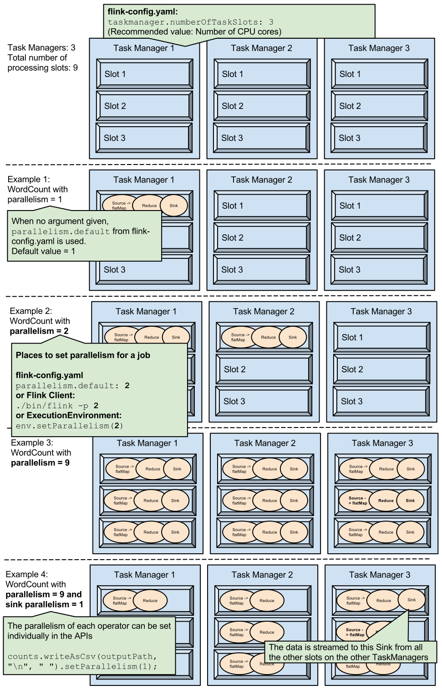

前言
前面已经介绍了一系列的 flink 任务抽象、网络传输、可靠性机制等细节，有了这些铺垫，终于可以开心的介绍 flink 的任务调度机制了，也是不易^_^
因为没有这些铺垫，就无法明白 flink 为什么要设计这样的一套调度机制！所以本章节讲解时会多穿插一些为什么
资源组
资源组模型
flink 的一个 Instance 可以被划分出多个 Slot，通过初始参数可以指定，他们既可以是 SimpleSlot，也可以是同时跑多个 task 的 SharedSlot，为了约束 task 之间的运行时的绑定关系，flink 抽象出了 SlotSharingGroup 和 CoLocationGroup 的概念。
一个 SlotSharingGroup 规定了一个 Job 的 DAG 图中的哪些 JobVertex 的 sub task 可以部署到一个 SharedSlot 上，这是一个软限制，并不是一定会满足，只是调度的时候有位置偏好，而 CoLocationGroup 是在 SlotSharingGroup 的基础上的硬限制，它限定了 CoLocationGroup 中的 JobVertex 中的 sub task 运行必须是一一对应的：假如 CoLocationGrou 限定了 JobVertex A 和 B ，那么 A 的编号为 i 的 sub task 必须和 B 的编号为 i 的 sub task 跑在一起。假如一个 job 的运算逻辑包括 source -> head -> tail -> sink，那么它的 task 运行时限制关系见下图：
资源组
SlotSharingGroup
上面已经提到 SlotSharingGroup 具有绑定 JobVertex 的 sub task 运行的作用，用户可以自己为 JobVertex 定义一个 SlotSharingGroup，如果不定义的话使用名为 default 的 SlotSharingGroup，定义的接口如下：
someStream.filter(...).slotSharingGroup("name");
ColocationGroup
ColocationGroup 通过 CoLocationConstraint 来管理一个 SharedSlot 上的 sub task
用户同样可以通过 api 定义 ColocationGroup：
资源Slot
一个 TaskManager 在初始化时可以指定自己最大持有的 Slot 数，包括 SharedSlot 和 SimpleSlot。
flink 使用 slot 作为资源抽象【主要是 cpu 和 memory】，一个 Instance 可以持有多个 SharedSlot，一个 SharedSlot 可以并行执行多个 sub task，对于 PIPELINED 来说，一种典型的模式就是一个 SharedSlot 同时执行一个 job 每个 JobVertex 上的一个并行 task，这样不仅可以尽量保证每个 Instance 上的任务负载尽量均匀，也能最大化的利用 PIPELINED 的流水线处理特性优化网络传输。
flink 的 slot 有两种：SharedSlot 和 SimpleSlot，前者可以绑定执行多个 sub task，后者代表一个 task 的资源占用。
SharedSlot
一个 SharedSlot 可以拥有多个 SimpleSlot，也可以包含嵌套的 SharedSlot【ColocationConstraint】，这样便形成了树形结构，SimpleSlot 和 SharedSlot 继承自共同的接口：Slot，它们都包含如下的关键信息：
- jobID：被哪个 job 占有
- groupID：属于哪个 SlotSharingGroup
- instance：属于哪个 TaskManager，或者属于哪个物理节点
- status：当前分配状态，共有四种状态 ALLOCATED_AND_ALIVE、CANCELLED、RELEASED、unknown
只有定义了 SlotSharingGroup 时才会通过 SharedSlot 来绑定 sub task 的执行
SimpleSlot
SimpleSlot 是执行单个 task 的 slot 抽象，它既可以在 TaskManager 上独立存在，也可以作为 SharedSlot 的子节点，内部封装了一个 task 的一次 Execution
继承关系下如下图：
SharedSlot 可以视作管理 SimpleSlot 的工具，那么 SharedSlot 自身又由什么方式管理呢？
SlotSharingGroupAssignment
flink 通过抽象 SlotSharingGroupAssignment 来管理 SharedSlot，这里的资源以 JobVertex 微粒度划分 group，也就是一个 JobVertex 占有一个资源 group。
Slot初始划分
SlotSharingGroupAssignment 是如何添加一个初始的 SharedSlot 节点的呢？
|
|
总结其逻辑：
- 这里必须是一个根节点 SharedSlot【没有父亲节点和子节点】，也就是 TaskManager 被配置的一个 Slot
- 如果没有强制的 task 位置绑定【ColocationConstraint】，从根 SharedSlot 上分配一个 SImpleSlot，编号为递增的 simple slot 个数
- 如果有 ColocationConstraint 限制，为传入的 SharedSlot 生成一个子 SharedSlot 并分配 SimpleSlot 注册到 ColocationConstraint 中
- 如果申请到 slot【simple or shared】，设置位置偏好：LOCAL、NON_LOCAL、UNCONSTRAINED【相对于持有的 Instance 来说】，并且将这个 SharedSlot 加入到其它 JobVertex 的可调度资源队列中，也就是说其它的 JobVertex 都可以讲在这个 SharedSlot 上部署自己的 sub task
为Task分配 SharedSlot
最底层的分配策略：
|
|
总结其逻辑：
- 判断对应的 group 是否有资源，如果没有将 SlotSharingGroupAssignment 目前所有的 SharedSlot 槽位视为可用资源
- 如果对偏好位置有要求，从 group 里筛选是否有满足的 SharedSlot，如果有设置 Locality 为 LOCAL 并返回，同时从该 group 的资源组中移除该 SharedSlot
- 如果对位置有要求但是没有找到符合的 SharedSlot，则从资源组里选择第一个可用的 SharedSlot，并将 Locality 设置为
Locality.NON_LOCA - 如果对位置没要求，则从资源组里选择第一个可用的 SharedSlot，并将 Locality 设置为
Locality.UNCONSTRAINED - 如果没资源，返回 null
- 一旦一个 group 中的 SharedSlot 被分出去就会被从资源池中删除，也就是说一个 SharedSlot 不可能分配一个 JobVertex 的两个 sub tasks，这一点非常重要
无 CoLocationConstraint 限制的资源划分策略
主要是从走上面的逻辑，细节这里就不说了
有 CoLocationConstraint 限制的资源划分策略
有 CoLocationConstraint 限制的时候，优先考虑 CoLocationConstraint 中的 SharedSlot【如果之前 CoLocationGroup 中的其它 task 分配过】，如果 CoLocationConstraint 中还没有分配 SharedSlot 则重新分配，并且再分配一个 SharedSlot 子节点，再这个节点上划出 SimpleSlot 供 task 使用
|
|
- 如果之前 CoLocationGroup 中的其它 sub task 有分配过资源，直接复用这个资源，对应 Locality 属性为
Locality.LOCAL - 如果之前分配过，但是该 SharedSlot 但是却被标记死亡，那么依据之前的 SharedSlot 的所在节点重新分配一次 SharedSlot，再此基础上再分配一个 SharedSlot，后分配 SimpleSlot 返回，对应 Locality 属性为
Locality.LOCAL - 如果是第一次分配，依据节点的偏好位置为参考，并再此基础上再分配一个 SharedSlot，后分配 SimpleSlot 返回，对应 Locality 属性为
Locality.LOCAL
调度器
flink 调度器的调度单位被抽象为一个 ScheduledUnit，一个 ScheduledUnit 封装了以下信息：Execution、SlotSharingGroup、CoLocationConstraint
flink 的关于调度的细节全部集成于 Scheduler
调度细节
首先来明确下 Scheduler 的调度核心：
|
|
总结其逻辑：
- 先判断该类型的 ExecutionVertex 是否已强制指定执行节点
- 如果有设置 SlotSharingGroup ，拿到对应的 SlotSharingGroupAssignment 和 ColocationConstraint，走上面描述的接口拿到分配的 SimpleSlot A，如果有 ColocationConstraint，会锁定位置，表示已经获取 SharedSlot 并分配完成，如果这个 SimpleSlot 的 Locality 是 LOCAL【预期的位置】，则立即返回，否则走下面的流程
- 如果上面的过程没有获取到 SimpleSlot，那么表示当前已经没有符合要求的 SharedSlot，这时候会重新分配一个新的 SharedSlot，方式是先遍历当前有资源的 Instance 依据偏好位置找到其中一个，并在 SlotSharingGroupAssignment 中注册返回一个新的 SimpleSlot B【细节上面介绍 SlotSharingGroupAssignment 时已说明】
- 如果已走到这一步，比较 A 与 B 的优劣，主要是调度位置是否符合预期的比较，选择更优的，释放掉另一个
- 如果没有 SlotSharingGroup 的约束，直接从 Instance 上申请一个根 SimpleSlot 来执行这个 task
- 以上调度器在分配 SharedSlot 的时候维护了一个队列：
instancesWithAvailableResources，每次有 Slot 资源的 Instance 被加入对列尾部，消费过的 Slot 会被 remove，这样可以轮询机器，可以使机器的 SharedSlot 分配尽量均衡
约束信息的生成
影响上面调度预期位置有三个重要因素：SlotSharingGroup、ColocationConstraint、prefferedLocations，我们逐一分析它们的生成逻辑：
SlotSharingGroup
向上追溯我们发现，Scheduler 的调度逻辑由 Execution 触发：
|
|
总结其逻辑：
- 如果用户没有为 JobVertex 指定 SlotSharingGroup ，则生成名为 ‘default‘ 的 SlotSharingGroup，否则为每个用户指定的名字定义一个 SlotSharingGroup
- 同一个 SlotSharingGroup 中的节点的 sub task 会共享 SharedSlot 资源
ColocationConstraint
|
|
总结其逻辑：
- CoLocationGroup 的生成逻辑和 SlotSharingGroup 类似，不过这个没有默认，需要用户手动指定，并且前提是需要有 SlotSharingGroup
- 从 CoLocationGroup 内 sub task 的 index 获取一个 ColocationConstraint，这样便实现了一一对应关系
prefferedLocations
这是调度位置信息的关键，不管是 CoLocationGroup 还是 SlotSharingGroup，都会优先参考节点偏好来申请资源，那么 flink 是依据什么信息来生成偏好位置的呢？
|
|
总结其逻辑：
- flink 计算节点的上游所有生产者所在节点，并作为自己的偏好位置
- 清空之前旧的偏好位置
这样就形成了最开始【资源组模型】一节中的调度模式，因为一开始的 source task 显然没有 prefferedLocations，由调度细节可以知道 flink 会轮询集群的不同 Instance，将 source task 分配在这些机器上，后面的 source task 的 consumer task 会优先调度到 source task 的节点上，这样便形成了一开始的调度模式！
触发调度
- 第一次提交任务时
- 有新的 Instance 或者新的 Slot 获取时，会轮询排对的调度任务进行调度
调度流程
这里只介绍 streaming 的流程，批处理类似，有兴趣的童鞋自行研究！
先梳理代码逻辑：
|
|
简单总结：
- 对于 PIPELINED，在 source tasks 部署完成后立马会触发一次下游 consumer tasks 的部署
- 在生产者 task 产生第一个 buffer 数据的时候也会触发一次 consumer tasks 的部署
附一张图解释该流程：

再附上官方的一张经典调度图：

Slot的资源隔离
待更新